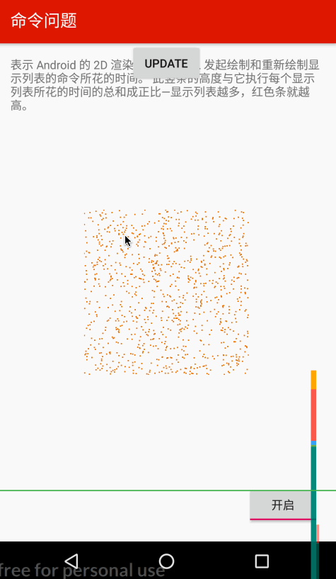
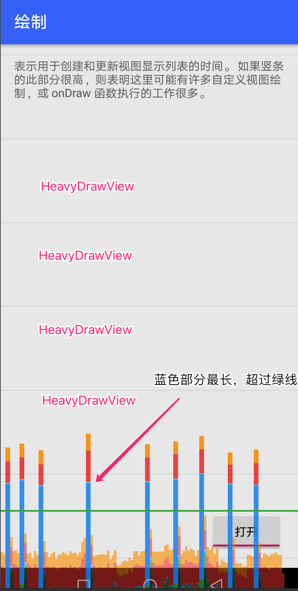
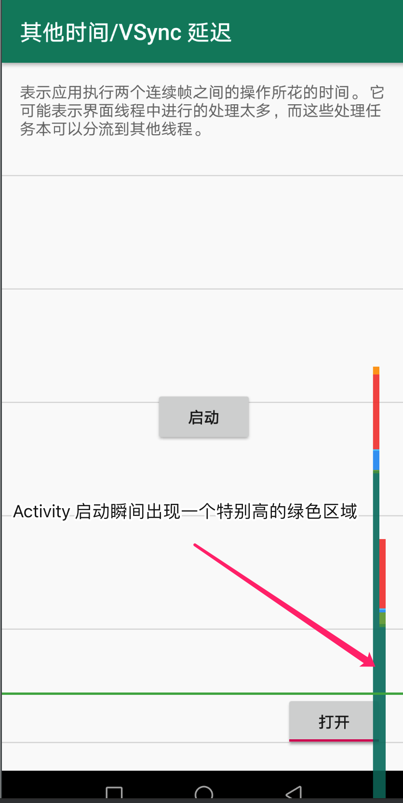

例说 Profile GPU Rendering
Profile GPU Rendering 工具很好用，但你真的清楚每个颜色的含义吗？
官方 Profile GPU Rendering 工具用于分析 UI 渲染瓶颈。官方通过两篇文档分别给出了工具用法及常见问题原因和解决办法：
- Inspect GPU rendering speed and overdraw | Android Developers
- Analyze with Profile GPU Rendering | Android Developers

但我仍然有以下疑问：
- 几个绿色太相近，我常常难以区分，这给分析问题带来困难
- 实际项目较复杂，对应的图形也相应变得复杂，如何分析
- 我的华为手机(Android 8.0)上似乎只能找到 7 种颜色，而不是官方给出的 8 种
- 如何理解 Upload，Issue，Swap 这几个阶段，什么样的代码会引起这些阶段耗时变长？
带着这些疑问，我写了一个 demo，尝试生成官方将代码跟颜色对应起来，以便于理解问题。 demo 截图如下：
demo地址: https://github.com/410063005/cmdemo/tree/master/gpuprofilerdemo
Demo介绍
首先看 Draw，Measure/Layout，Anim，Input 这几个相对容易理解的阶段。
Draw
RecyclerView 中的每个 item 是 HeavyDrawView。HeavyDrawView 代码如下：
1 | class HeavyDrawView constructor(context: Context, |
当开关打开时 onDraw() 方法会导致主线程 sleep 一段时间，用于模拟绘制性能低下的场景，结果就是我们看到的蓝色区域明显升高以至于超过 16ms 绿线。
Measure/Layout
如法炮制了一个 HeavyLayoutView 代替 HeavyDrawView，想让对应颜色的区域升高。
1 | class HeavyLayoutView constructor(context: Context, attributes: AttributeSet? = null, defStyleAttr: Int = 0) |
RecyclerView 中的每个 item 是 HeavyDrawView。但这回行不通，并非我们预期的 Measure/Layout 对应区域变长，而是 Input 阶段变长。推测原因是 RecyclerView 滚动被统计到 Input 阶段，而 onLayout() 在 RecyclerView 滚动后马上被触发。
换一种简单粗暴的实现方式：点击 forceLayout 按钮时会强制调用 HeavyLayoutView.requestLayout()
结果我们看到 Measure/Layout 阶段对应的绿色区域明显升高。
Anim
1 | textView.setOnClickListener { |
Input 和 Misc
前面提到在我的华为手机上只有 7 种颜色，貌似是 Input 和 Misc 都统计到同一种颜色中，而不同于官方给出的不同颜色。这似乎也说得通

因为无论是 Input 还是 Misc ，本质都是在主线程中执行了过多的工作，无非就是 Input 阶段特指 “input event callback”。
Input 对应的颜色升高其实很常见。一个典型的场景就是点击一个按钮启动另一个 Activity。无论被启动的 Activity 是谁，启动的那一瞬间都会一个明显升高的绿色区域。这个无法避免。
很容易模拟 Input 耗时多的场景：
1 | clickMe.setOnClickListener { |
Upload
the CPU and the GPU have different RAM areas dedicated to processing. When you draw a bitmap on Android, the system transfers the bitmap to GPU memory before the GPU can render it to the screen. Then, the GPU caches the bitmap so that the system doesn’t need to transfer the data again unless the texture gets evicted from the GPU texture cache.
根据文档知道，只要不停地绘制 Bitmap 就可以让 Sync/Upload 阶段升高。不过为了让升高得更明显：
- Bitmap 要大一点
- Bitmap 要有变化(防止 GPU 缓存)
代码如下：
1 | override fun onCreate(savedInstanceState: Bundle?) { |
Issue
For the system to draw display lists to the screen, it sends the necessary commands to the GPU. Typically, it performs this action through the OpenGL ES API.
This process takes some time, as the system performs final transformation and clipping for each command before sending the command to the GPU. Additional overhead then arises on the GPU side, which computes the final commands. These commands include final transformations, and additional clipping.
一帧中系统需要渲染的 display list 的复杂性以及数量决定了 Issue 阶段的耗时。文档给出了让 Issue 阶段耗时变多的一个例子：
1 | for (i in 0 until 1000) { |
封装成 HeavyIssueView，代码如下：
1 | class HeavyIssueView constructor(context: Context, |
Swap
The GPU executes work in parallel with the CPU. The Android system issues draw commands to the GPU, and then moves on to the next task. The GPU reads those draw commands from a queue and processes them.
In situations where the CPU issues commands faster than the GPU consumes them, the communications queue between the processors can become full. When this occurs, the CPU blocks, and waits until there is space in the queue to place the next command. This full-queue state arises often during the Swap Buffers stage, because at that point, a whole frame’s worth of commands have been submitted.
不知如何让这个阶段升高。待补充
总结
以上 demo 演示了不同的代码是如何让渲染过程中出现不同的性能瓶颈的，可以为实际项目中分析 UI 性能问题提供指导。
- 渲染中的每一阶段并不是完全独立的。比如，绘制大图，可能引起 Upload 和 Issue 两个阶段均出现瓶颈